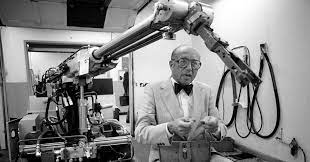

De IRB6 was een revolutie in de robotindustrie. Hij was veiliger, nauwkeuriger en efficiënter dan zijn hydraulische voorgangers.
De IRB6 had een bereik van 1,8 meter en een hefvermogen van 100 kilogram. Hij was uitgerust met zes servomotoren, waardoor hij
een snelheid van 1,5 meter per seconde kon bereiken.